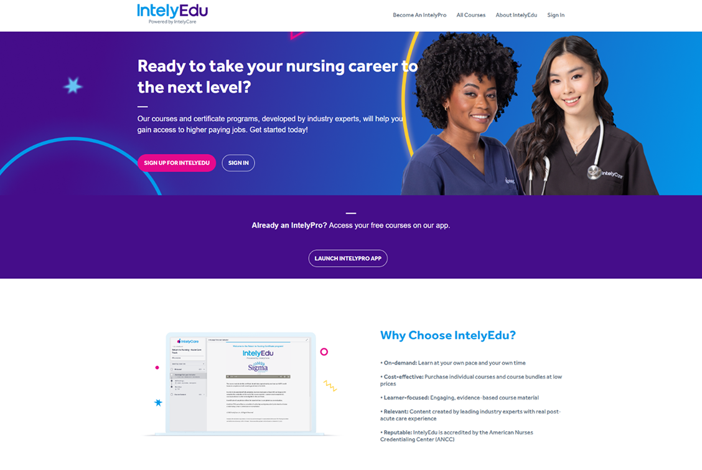

B2B SAAS · CLOUD OPS · FACILITIES
Enterprise Energy Management Platform
A cloud operations and facilities monitoring platform for MykroGrid — giving energy teams a single pane of glass for site health, alarms, and interventions.
Read case study
FEATURED WORK

